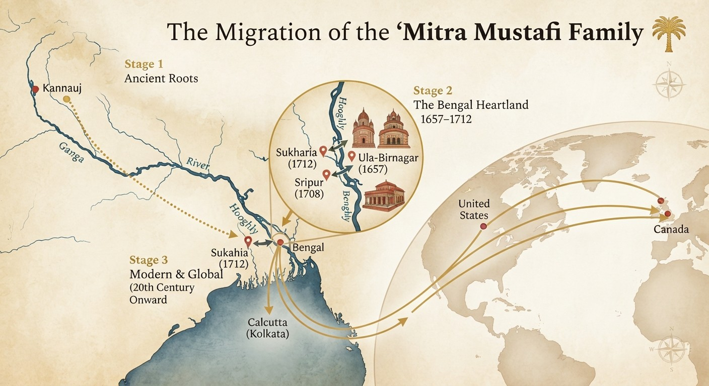

Prologue: A Name Forged by Movement
Every family carries a history, but few lineages have their entire journey encoded directly into their surname. To understand the Mitra Mustafi family is to follow a thousand-year story of scholarship, political acumen, river trade, and reinvention. It is a tale that begins in the ancient imperial heartland of northern India, takes root in the lush alluvial plains of Bengal, crosses the historic waters of the Hooghly River, and eventually spans the oceans to the modern global diaspora. Along every mile of this journey, one constant served as both their highway and their livelihood: the sacred waters of the Ganga.

Follow the journey
Chapter I: The Ancient Journey East — From Kannauj to the Delta
Our story begins centuries ago in Kannauj, an ancient, glittering royal capital situated along the banks of the Ganga River in what is now Uttar Pradesh. In the early medieval period, Kannauj was the epicenter of northern Indian culture, statecraft, and learning. Among its educated administrative elite—known as the Kayasthas—lived Kalidas Mitra.
According to centuries-old Bengali genealogical chronicles (Kulajis), the trajectory of the Mitra family changed forever during the reign of King Adisura of Bengal. Seeking to revitalize administrative governance, record-keeping, and Vedic traditions in his eastern kingdom, King Adisura sent an invitation to Kannauj, requesting five learned Brahmins and five accomplished Kayastha administrators to relocate to his court. Kalidas Mitra answered that call.
Leaving behind the familiar stone cities of the upper Gangetic plain, Kalidas Mitra and his household embarked on a monumental migration eastward.
Leaving behind the familiar stone cities of the upper Gangetic plain, Kalidas Mitra and his household embarked on a monumental migration eastward. Traveling hundreds of miles down the winding course of the Ganga, they entered the fertile, river-laced delta of Bengal. There, the family laid down deep roots, serving successive regional rulers as scribes, revenue collectors, and keepers of law. For nearly nineteen generations, the descendants of Kalidas Mitra lived and worked across Bengal, quietly building a reputation for mathematical precision, administrative loyalty, and scholarly discipline.
Chapter II: The Teacher of Teka and the Rise at Ula-Birnagar (1657–1708)
By the mid-17th century, India was under the rule of the Mughal Empire, and Bengal was one of its wealthiest, most fiercely contested provinces. In the year 1657, a revered scholar and teacher (Gurumahashay) named Mohan Mitra decided to leave his ancestral home in the village of Teka. Seeking stability and new opportunities along the main artery of Bengali commerce, Mohan Mitra migrated to the eastern banks of the Bhagirathi-Hooghly River, settling in a prosperous riverside town called Ula (known today as Birnagar, in West Bengal’s Nadia district).
Mohan Mitra brought with him a devotion to education, instilling a rigorous work ethic in his son, Rameshwar Mitra. Growing up in Ula during the late 17th century, Rameshwar displayed an extraordinary gift for accounting, revenue assessment, and Persian statecraft. His talents soon caught the attention of the Mughal administration in Bengal. Appointed to the Accounts Department under the Mughal Governor Shaista Khan, Rameshwar quickly proved himself indispensable.
When Murshid Quli Khan took charge of Bengal’s finances and later became Nawab in 1700 CE, the province’s tax system underwent massive reorganization. Rameshwar Mitra’s integrity and mastery over complex land-revenue ledgers were so exceptional that Murshid Quli Khan dispatched him on a special deputation to the imperial Mughal capital in Delhi.
There, in the grand court of the sixth Mughal Emperor, Aurangzeb, Rameshwar Mitra’s financial scholarship and dignified bearing made a profound impression. In 1704 CE, Emperor Aurangzeb bestowed upon Rameshwar a prestigious royal title: Mustauphi—an Arabic-Persian administrative rank equivalent to Auditor-General or Comptroller of Accounts. Over time, Mustauphi was anglicized to Mustafi (entirely distinct from the Arabic given name Mustafa). Alongside the title, the Emperor presented Rameshwar with a royal insignia: the Golden Palm (Panja), which became the enduring family crest.
Returning to Ula-Birnagar as a celebrated zamindar (aristocratic landholder), Rameshwar Mitra Mustafi transformed his adopted hometown into a thriving cultural hub. Before his passing around 1708, he constructed sprawling brick mansions (Rajbaris), initiated grand religious festivals, and commissioned architectural masterpieces such as the 1694 Jor-Bangla Temple, whose intricate terracotta panels still depict scenes from the Ramayana, Krishna Lila, and 17th-century river life.
Chapter III: Crossing the Hooghly — The Twin Branches of Sripur and Sukharia (1708–1857)
Rameshwar Mitra Mustafi left behind ten sons and a daughter. While the family’s primary seat remained in Ula on the eastern bank of the Hooghly River, the early 18th century brought dramatic economic shifts. European trading companies—the British, Dutch, French, and Danish—were establishing factories up and down the western bank of the Hooghly, turning the river into one of the busiest commercial corridors in the world.
Recognizing that the future of Bengal’s economy lay across the water, Rameshwar’s sons initiated the family’s next great regional migration, crossing the Hooghly River into the Hooghly district:
- The Sripur-Balagarh Branch (1708): In 1708, Rameshwar’s eldest son, Raghunandan Mitra Mustafi, crossed the river to settle in Sripur (in the Balagarh region). Shrewdly observing the European merchants' desperate need for sturdy river vessels, Raghunandan established a massive indigenous boat-making and shipbuilding enterprise. His venture generated immense wealth, enabling him to build a fortified residential complex complete with towering temples, a Rash Mancha, and the famous 1707 wooden Chandi Mandap—an intricately carved pavilion where the family’s 300-year-old Durga Puja still takes place today.
- The Sukharia-Somra Branch (1712): Four years later, in 1712, Rameshwar’s fourth son, Anantaram Mitra Mustafi, migrated just a short distance down the western bank to the village of Sukharia (near Somra Bazar). Anantaram’s son, Tilakram Mitra Mustafi, cemented the family's dominance in 1757—the very year of the Battle of Plassey—by purchasing the zamindari rights to Sukharia, Punui, and Gopinagar from the Maharaja of Burdwan for a token sum of 1,001 rupees. [1, 2]
Over the next century, the Sukharia branch became legendary patrons of Bengali temple architecture. In 1813, Anantaram’s grandson Bireshwar Mitra Mustafi commissioned the iconic Ananda Bhairavi (Anandamoyee) Temple—a soaring 25-pinnacled (panchavimshati-ratna) terracotta marvel flanked by twelve smaller Shiva temples. His cousins followed suit, constructing the nine-pinnacled Harasundari Temple (1814) and the Nistarini Temple (1847), alongside palatial, columned estates like Radhakunja.
Meanwhile, back on the eastern bank, tragedy struck the original ancestral home. Over the decades, the Hooghly River gradually shifted its course away from Ula-Birnagar, choking off its trade. Then, in 1857, a devastating epidemic—known locally as the Burdwan Fever (a virulent strain of malaria)—swept through Nadia, decimating Ula’s population. Surviving members of the Ula branch abandoned their crumbling mansions, migrating across the river to join their relatives in Hooghly or heading south toward the rising colonial capital of Calcutta.
Chapter IV: From Zamindars to Global Citizens (20th Century to Present)
By the dawn of the 20th century, the world that had created the Mitra Mustafi zamindars was rapidly fading. Under British colonial rule, economic, educational, and political power had consolidated in Calcutta (Kolkata), just thirty miles south of Sukharia and Sripur.
Seeking modern university degrees, legal careers, medical training, and civil service posts, younger generations of Mitra Mustafis began migrating from their quiet rural estates into Calcutta’s bustling neighborhoods. When India achieved independence in 1947 and subsequently passed the Zamindari Abolition Acts in the 1950s, the feudal landholding system came to a formal end. The vast agricultural estates were redistributed to tenant farmers, and the grand Rajbaris of Sukharia, Sripur, and Ula were left largely in the care of local trusts and caretakers.
Yet, the spirit of movement that had carried Kalidas Mitra from Kannauj and Mohan Mitra to Ula did not stop in Kolkata. In the mid-to-late 20th century, as global borders opened for skilled professionals, scholars, and scientists, descendants of the Mitra Mustafi family embarked on their fourth—and farthest—migration.
Crossing the Atlantic and Pacific oceans, family members immigrated to the United States, the United Kingdom, Canada, Australia, and across Europe. In their new homelands, they traded the zamindar’s ledger for careers as physicians, engineers, university professors, entrepreneurs, and artists—carrying forward the same intellectual curiosity that had once impressed an emperor in Delhi.
Epilogue: The Annual Return
Today, the Mitra Mustafi family is truly global, scattered across time zones and continents. Their ancestral mansions in Sukharia and Ula stand partially in romantic ruin, their weathered brick pillars overtaken by banyan roots and immortalized in classic Bengali cinema like Mrinal Sen’s Akaler Sandhane (In Search of Famine).
Yet every autumn, during the vibrant days of Durga Puja, the migration briefly reverses. Descendants travel from Kolkata, London, New York, and Toronto back to the wooden Chandi Mandap of Sripur and the temple courtyards of Sukharia and Birnagar. Beneath the gaze of the Golden Panja emblem, lighting 51 earthen lamps just as Raghunandan did in 1707, the family gathers once more—proving that no matter how far across the globe they travel, their story forever flows back to the banks of the Hooghly.
Our story continues
Our family’s journey began centuries ago along the sacred waters of the Ganga, took root on the banks of the Hooghly in Ula, Sripur, and Sukharia, and has now carried us across the ocean to our home here in America.
Living in the United States, we are proud to be part of a country built on dreamers, builders, and new beginnings. Yet, as we embrace everything American life has to offer, we never want to leave our past behind. Instead, our goal is to weave both worlds together.
Just as our ancestors adapted and thrived across centuries, we are taking the warmth of our Bengali traditions, the artistry of our heritage, and the values passed down under the Golden Panja, and blending them with the openness, diversity, and spirit of America. By celebrating our cultural roots right alongside American culture, we aren't choosing one home over the other—we are creating a richer, shared global culture for our children and for the generations still to come.
The river of our history hasn't ended; it has simply reached a wider ocean.